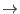

| illegalIPPVvalue | error |
| | Parameter IPPV has illegal value, check ODF summary file
|
| NoGoodObtValues | error |
| | Time computation failed because no good frames could be identified
|
| InconsistentTimeInfo | error |
| | Time computation is inconsistent, there may be time back-jumps
in the data. Submit a report with SAS_VERBOSITY=5.
|
| toomany | error |
| | Number of frames larger than allowed limit
|
| wrongMode | error |
| | Illegal or missing type of data mode or not scientific data mode
|
| changedMode | warning |
| | data mode has been changed: eFF  FF or FF eFF
corrective action: continue, ODF seems to be inconsistent
|
| CCDlowGain | warning |
| | HK values of this CCD indicate that the mode is not HIGH gain
corrective action: continue, energy scale will be incorrect
|
| singleBoresightBurst | warning |
| | Unusual RAWY event range, dataset may be in SingleBoresight BURST format
corrective action: continue, window and associated flags may be wrong
|
| doubleWindowTiming | warning |
| | Unusual RAWX event range, dataset may be in double-window TIMING format
corrective action: continue, window and associated flags may be wrong
|
| BPTcode | warning |
| | BadPixelTable codes in PAH.FITS and ADUCONV.CCF differ
corrective action: continue, probably the EPN_ADUCONV_####.CCF or the whole CIF is incorrect (too old),
amplitudes in columns with offset shifts may be wrong
|
| missingIPPV | warning |
| | Parameter IPPV not found, will set it to default value
corrective action: continue with default value, check ODF summary file
|
| misFrame | warning |
| | Event frame not found in AUX file
corrective action: continue, AUX file may have been created incorrectly
|
| eventsNoAUX | warning |
| | events file non-empty but AUX file empty
corrective action: continue, AUX file may have been created incorrectly
|
| noNGAUX | warning |
| | No good AUX1 intervals left for analysis
corrective action: continue
|
| noAUX1forCCD | warning |
| | No AUX1 entries for this CCD
corrective action: continue
|
| noAUX2forCCD | warning |
| | No AUX2 entries for this CCD
corrective action: continue
|
| PHAoffset | warning |
| | Unusual amplitude range of ODF event list
corrective action: continue, contact task developer
|
| corruptedAUX1 | warning |
| | PNAUX1 extension contains impossible values, not nominal ODF
corrective action: continue, may fail for this CCD or other CCDs later
|
| noPNAUX1 | warning |
| | PNAUX1 extension missing in AUX file, not nominal ODF
corrective action: continue, skip PNAUX1 related code, time and exposure entries incorrect
|
| noPNAUX2 | warning |
| | PNAUX2 extension missing in AUX file, not nominal ODF
corrective action: continue, skip PNAUX2 related code, exposure entries incorrect
|
| noPNPMH1 | warning |
| | PNPMH1 extension missing in housekeeping file, not nominal ODF
corrective action: continue, skip PNPMH1 related code
|
| noPNPAH1 | warning |
| | PNPAH1 extension missing in housekeeping file, not nominal ODF
corrective action: continue, skip PNPAH1 related code
|
| misHKcolumn | warning |
| | column expected in HK file but is absent, not nominal ODF
corrective action: continue, skip analysis for this column
|
| emptyHKrange | warning |
| | no HK values within limits, use all entries in exposure for analysis
corrective action: continue
|
| notHKconstant | warning |
| | HK value is expected to be constant (or limited to small interval)
within the exposure but is not
corrective action: continue
|
| HKoffsetmap | warning |
| | No offset map calculation interval could be determined for this
observation
corrective action: continue
|
| OffsetMap | warning |
| | HK values indicate that the filter was not the same during
intervals of offset map calculation and science exposure or
that the offset map calculation interval was not immediately
before this exposure
corrective action: continue
|
| illegalODF | warning |
| | The ODF seems to be inconsistent.
See subsection ![[*]](../icons/crossref.png)
corrective action: continue, some underlying SAS packages may fail as a consequence
|
| FILTERwrong | warning |
| | The filter wheel position sensor values do not properly reflect the actual
FILTER position, this is overwritten using a black-list, and the FILTER
keyword in the primary extension is then correct.
corrective action: continue
|
| wrongFC0 | warning |
| | No mode dependent livetime factor
corrective action: set mode dependent livetime factor FC0 = 1
|
| wrongFTCoarse | warning |
| | Illegal FTCOARSE time value in AUX file
corrective action: give a warning, continue execution
|
| FreqShiftLarge | warning |
| | The oscillator frequency shift derived from HK parameters exceeds the limits given by
SAS_JUMP_TOLERANCE or EPN_TIMEJUMPTOL_####.CCF.
False time jumps may be introduced by the OAL.
corrective action: continue execution, user may consider re-run according to recommendation given along with the warning
|
| srcpos | warning |
| | BURST mode expects source position in the range 181 to 200
corrective action: give a warning, continue execution
|
| wrongCoord | warning |
| | invalid event coordinates
corrective action: write an OUT_OF_CCD_WINDOW flag and continue execution
|
| wrongReadoutOrder | warning |
| | events are in wrong readout order
corrective action: write an IN_BAD_FRAME and
IN_SPOILED_FRAME flag, continue execution
|
| wrongTimeOrder | warning |
| | ODF file not sorted in time
corrective action: write an IN_BAD_FRAME and
IN_SPOILED_FRAME flag, continue execution
|
| wrongMIPcoord | warning |
| | MIP detected with illegal coordinates
corrective action: continue
|
| MIPrejection | warning |
| | MIP CORREC.1 was commanded (row-wise)
this mode is not fully calibrated
corrective action: continue, background rejection and CTI correction may be incomplete
|
| tooLongExposure | warning |
| | TELAPSE = TSTOP-TSTART of this exposure is longer
than the whole scheduled observation as specified by
DURATION = DATE_END-DATE_OBS
corrective action: expoure may be longer than scheduled or event times wrong
|
| SubscriptOutOfRange | warning |
| |
Size is estimated from TSTOP-TSTART divided by the frame
time plus margin; in this exposure this appears to be insufficient
and therefore time inconsistencies must have occured.
corrective action: EXPOSURE extension becomes larger than allocated arrays
|
| date2000 | warning |
| | unusual values of DATE-OBS and/or DATE-END
corrective action: give a warning, continue execution
|